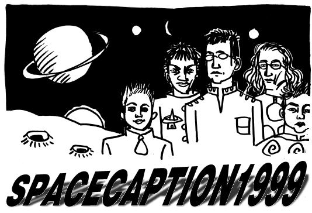

21 AUGUST 1999. A VIOLENT UNKNOWN EVENT BLASTS CENTRAL OXFORD INTO SPACE. STRANDED IN THE UNION A PARTY OF REVELLERS CONTINUE THEIR BUSINESS, DRINKING THE BAR DRY AND BUYING, SELLING AND DRAWING BEAUTIFUL COMICS. BUT THEY NEVER LOSE SIGHT OF THEIR QUEST. FOR THEY HAVE SWORN TO DISCOVER THE FUTURE OF SMALL PRESS AND ALTERNATIVE COMICS. OR, FAILING THAT, JOAN COLLINS IN A GOLD FRIGHTWIG.
Contacts
- Mail:
caption99@alleged.demon.co.uk - Fax: 08701 640622
- Paper mail: CAPTION,
24 Campbell Road, Oxford OX4 3PF, UK
Accomodation
For information about accomodation overnight in Oxford, Oxford City accomodation index.
GPS Note
The GPS (Global Positioning Satellite, I think) has its equivalent of the Y2K during the CAPTION weekend when its weeks counter clocks over to 0. For more information, see The Register: End-of-the-week bug to eat GPS.